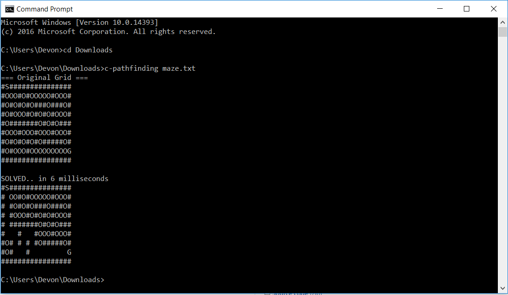

BASIC CONTROLS
You must create a map to start the pathfinding. The start node is
blue, end node is red and the walls are black.
To create nodes:
- Start: hold 's' + left click
- End: hold 'e' + left click
- Wall: left click
To delete nodes:
- Same as creation, except right click!
DIAGONAL
My algorithm supports borth diagonal and non-diagonal pathfinding.
Simply check the "diagonal" box in the control panel (bottom left of the screen).

VARIABLE SPEED
You may change the speed of the visualization during runtime.
- By default, speed is 50%
Notice: speed control only works when showSteps is true.
If showSteps is false, that leads to the next section..
TIMED EFFICIENCY
You may choose to view a step-by-step process of the algorithm by selecting showSteps box at the bottom left.
- If showSteps is false, the algorithm will skip visuals until the end, and process as fast as possible.
Also known as Timed Efficiency. This is useful when you want to analyze the efficiency of the algorithm in various
conditions, map sizes and so on. The example below shows showSteps as false, where it times the algorithm and outputs Completed in 4ms
at the bottom left.

ADVANCED
Those are the basics! Now you can be free to make the map as complicated as you desire. (Not really, because making the map too large will overflow the stack).

ZOOM
You can (kind of) zoom with the scroll wheel. I wouldn't really advise it. It does not zoom into your mouse, only towards the top left corner, and making the map too big will crash the program. This needs some work. However, If you zoom in far enough you can view each nodes information. The top left is the "F cost", bottom left is "G cost" and bottom right is "H cost". I will work on properly implementing a zoom feature soon.
COMMAND LINE (C)
*Calling all low-level devs*. I recreated my A* pathfinding algorithm in C! Instead of a graphics interface this is meant to run on the command line and analyze a maze given by a .txt file. '#' characters are walls, 'O' characters are open, 'S' is the start and 'G' is the end. Visit the github page for details on how to run, and obtain the executables.
